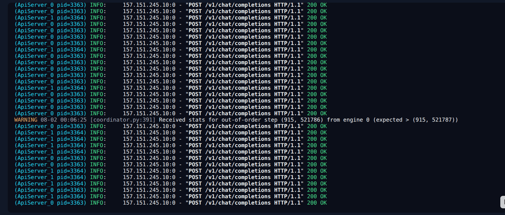

FL-04 Orchestrator
A draft → red-team → revise pipeline on a locally served open-weight model, and the work to turn that fixed workflow into an agent.
The problem
Architectural Decision Records were being produced through a manual "draft → red team → revise" loop: one model drafts the ADR, a second critiques it against a fixed checklist, and the first revises. Every document goes through all three steps regardless of how trivial or complex the change is, which wastes time and tokens on small updates.
Current state — a workflow, not an agent
As it stands today, FL-04 is a workflow, not an agent. The sequence of steps is hardcoded, and neither model decides when to skip a step or call a tool. It is an evaluator–optimizer pattern: the code, not the LLM, controls the path. Naming that honestly matters, because it is what defines the upgrade.
Everything runs against a local inference server rather than a hosted API, which keeps the
cost of iterating on prompts at zero and keeps the documents in-house. Below is that server
handling the /v1/chat/completions calls for each draft, critique and revise step.

The planned upgrade
To make this an agent, control has to move from the hardcoded sequence into the model itself. The concrete design is an orchestrator agent that sizes the change first — minor versus major decided by a diff-size threshold over lines and files touched.
- Below the threshold: draft and finalise in one pass, skipping the red team entirely.
- Above it: pull in extra context — searching the codebase, checking related ADRs — before drafting, and only then decide whether to invoke the critique step.
This part is designed, not yet built. The live pipeline is still the fixed three-step workflow described above.